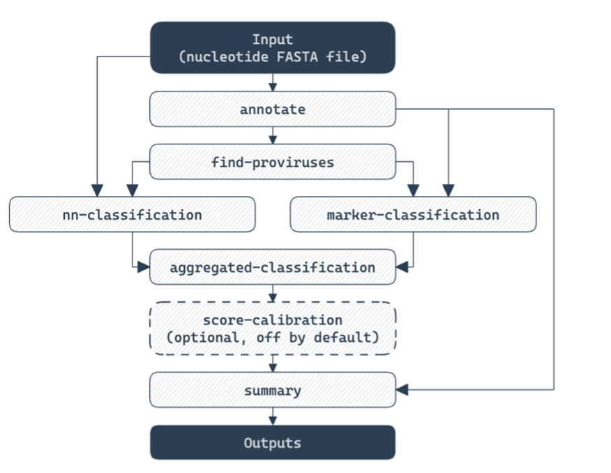
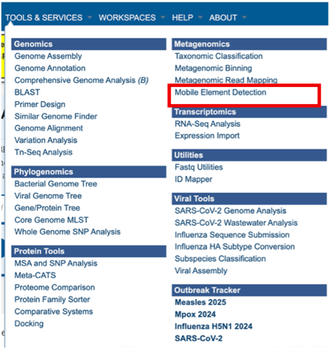
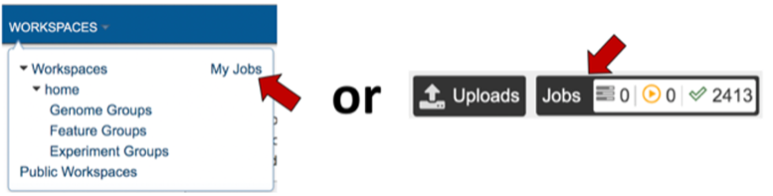
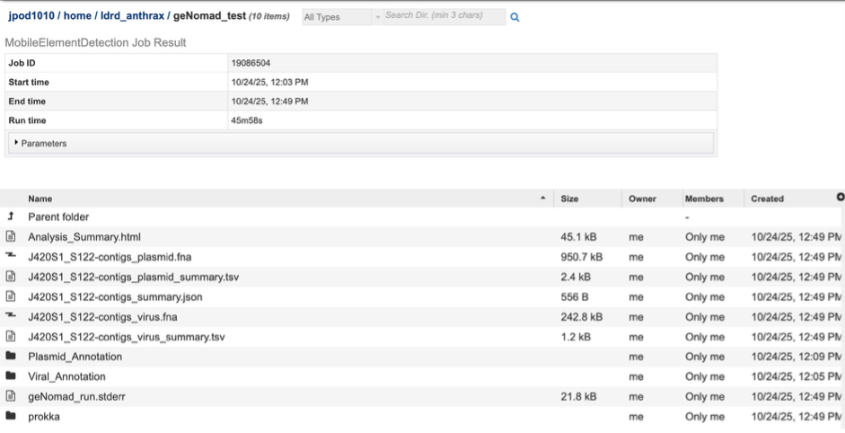
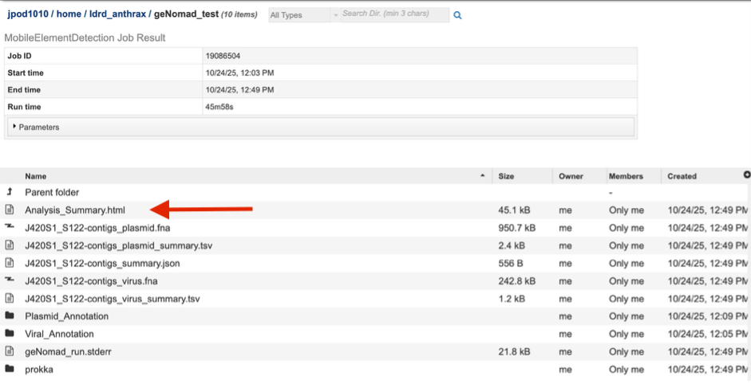
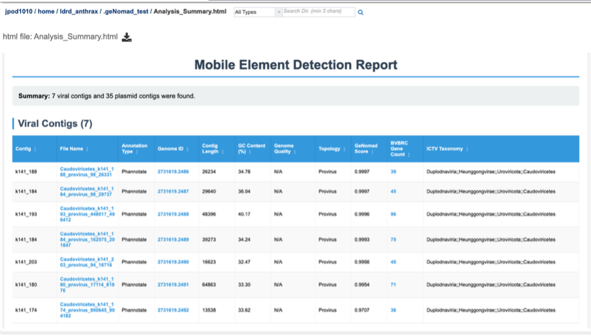
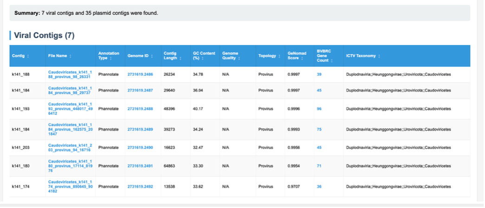
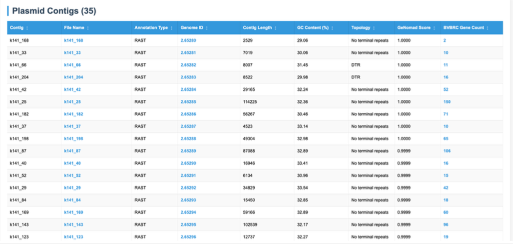
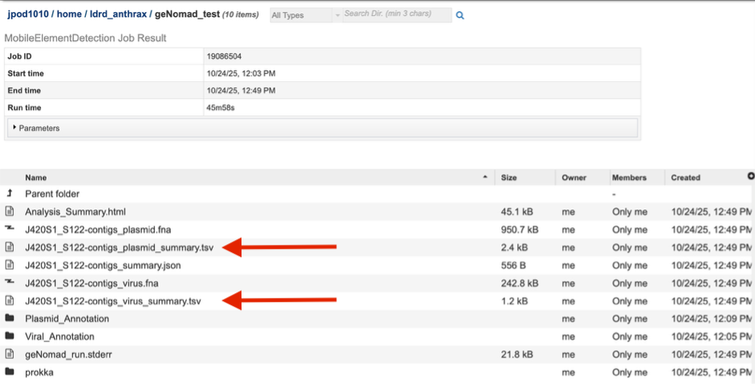
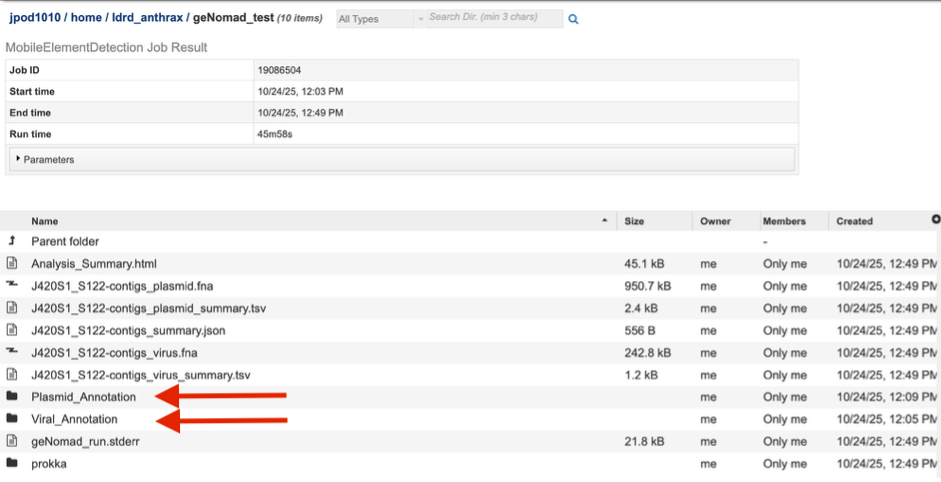

Mobile Element Detection Service¶
Revised: April 9, 2026
The Mobile Element Detection Service allows users to identify viruses and plasmids in nucleic acid datasets. The use cases for this pipeline are broad – from detecting novel viruses in complex wastewater samples, to identifying plasmids in isolate genomes. The core of the Mobile Element Detection service is geNomad which detects viruses and plasmids in assembled contigs. This pipeline can accept short reads or assembled contigs. If raw reads are provided, assembly can be carried out using any of the assembly methods in the Genome Assembly Service. The output of this pipeline is an assembled contigs file (if short reads are provided) and a tailored geNomad output which links identified viral and plasmid resources to BV-BRC databases.
The geNomad workflow¶
The Mobile Element Detection Service currently uses geNomad version 1.11.1, and whichever assembly method is selected from the Genome Assembly Service. Much of this tutorial is based on the geNomad tutorial from NERSC. This pipeline runs the geNomad end-to-end command, which runs a series of distinct commands within geNomad – annotate, find-provirus, both nn-classification and marker-classification, aggregated-classification and then summary.

Annotate – this step identifies genes in contigs using pyrodigal-gv, and annotates these genes using MMseqs2 against a dataset of 227,897 markers which include PFAM, COG, AMRFinder genes, BUSCO core genes and others. This provides both taxonomic assignments for contigs, and annotations for genes.
Find-proviruses – this step takes annotations from the previous step along with input contigs, to identify regions in host genomes with integrated viruses. tRNAs and integrases are predicted on input contigs using ARAGORN and MMseqs2 respectively. Gene annotations from Annotate stage are used in a conditional random field model to identify regions of contigs enriched in viral specific markers. These regions, along with the tRNA predictions and integrase identification, are used for boundary refinement. The output from this is provirus coordinates within larger contigs, annotations for provirus genes, and taxonomy for proviruses.
Marker-classification – this step is the first of two that are run in parallel. This step takes information and features from gene and provirus gene annotations – such as the rate of strand switching, coding density, and many other features – and feeds these features into an XGBoost tree classification method. This tree classification method assigns for each contig a probability of being a chromosome, a plasmid or a virus.
nn-classification – this step is the second of the two that are run in parallel. This step takes the underlying nucleotide sequences and feeds them into an IGLOO neural network. This network then provides for each contig a probability of being a chromosome, a plasmid of a virus, as above.
Aggregated-classification – this step combines the probabilities generated in the previous two steps, to deduce an overall probability for the contig of whether it is a chromosome, plasmid or virus. This method weights the two individual scores in such a way that marker-classification is weighted more heavily when a high number of genes are well annotated and assigned to markers. In this way, the neural net scores are leveraged more for viruses or plasmids that are poorly described by annotation databases.
Summary – this step summarizes gene annotations and identification of viruses and plasmids, and generates output files. This includes fasta files for identified viral sequences, identified plasmid sequences, and contigs with proviral sequences. Additionally, summary output files which are retained and highlighted in the Mobile Genetic Element Detection pipeline are created in this step, such as the virus_summary.tsv
Processed Output:¶
Each viral, proviral, and plasmid contig is annotated using the BVBRC annotation service. Appropriate viral taxa are annotated using the LowVan pipeline, with quality scoring. We note that this does not perform viral binning, and that neither geNomad nor LowVan will aggregate multiple contigs or segments into a single unified genome. Proviral genomes are annotated using Phannotate, the phage annotation pipeline, and plasmid contigs are annotated with RAST.
Using the Mobile Element Detection Service¶
The Mobile Element Detection Service can be found under the Services main menu, below the Metagenomics subheading. You must be logged in to the BV-BRC to use this service.

Finding the Mobile Genetic Element Detection Results¶
The job can be located from three places on any BV-BRC/dxkb page. Clicking on the Workspace tab will reveal two of the places where the workspace or jobs folder can be located, and also from the Jobs monitor located at the lower right of any BV-BRC page.

The landing page shows all the files produced by the job that was submitted. The top portion gives details such as the run time and input parameters

Each job will return a report summarizing the results. Click on that Analysis_Summary.html file to view this report.

The report has two overall sections – displaying first contigs identified as viral, and then contigs identified as plasmids.

Contigs identified as viral are displayed here, along with a number of details and links to annotations performed by other BV-BRC tools on those contigs. Details taken from geNomad – such as contigs length, GC%, status (virus, provirus) as well as geNomad assignment probability score and taxonomy, are displayed here. Also displayed are additional details of analysis carried out by BV-BRC. Phannotate annotations are carried out on identified viral sequences, and this links these identified viral contigs to BV-BRC databases – which can be accessed through the Genome ID column for each viral contig.

Contigs identified as plasmids are displayed here, along with a number of details and links to annotations performed by other BV-BRC tools on those contigs Details are taken from geNomad such as contig length, GC%, topology and geNomad assignment probability score. Also displayed are additional details of analysis carried out by BV-BRC. RAST annotations are carried out on identified plasmid sequences, and this links these identified plasmid contigs to BV-BRC databases – which can be accessed through the Genome ID column for each plasmid contig.

In addition to this summary which then provides links to BV-BRC analyzed genome IDs, other outputs are provided linking to raw data.
a. Virus summary .tsv and Plasmid summary.tsv are provided, which is a sample wide summary of all viral and plasmid contigs identified, respectively.

b. Plasmid_Annotation and Viral_Annotation folders are provided, in which a single folder for each contig identified as either plasmid or virus can be found. Inside that folder for every single contig of either group, a single .fasta file containing only that contig can be found. This allows direct download or manipulation for further analysis.
